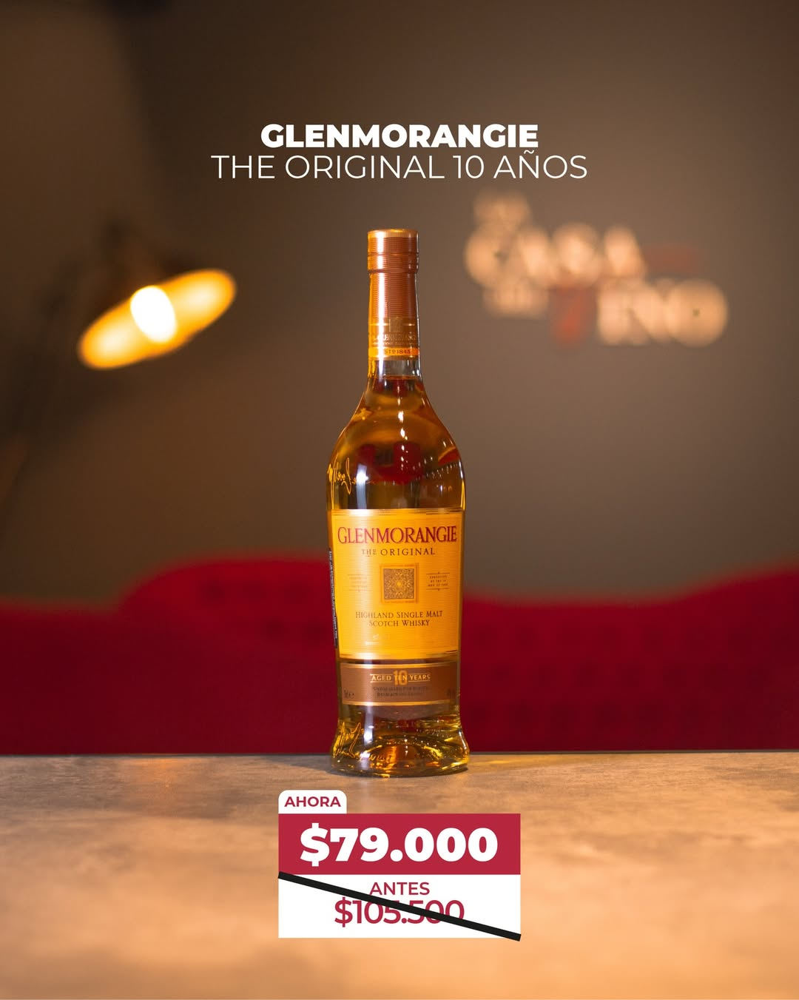
Historia.
Desde 1999, La Casa del Vino San Juan se dedica a compartir la cultura y la pasión por el vino. Nacida de una tradición familiar ligada al mundo vitivinícola, la vinoteca busca ofrecer un espacio donde los amantes del vino puedan descubrir nuevas etiquetas, recibir asesoramiento y disfrutar de una experiencia cercana y auténtica.
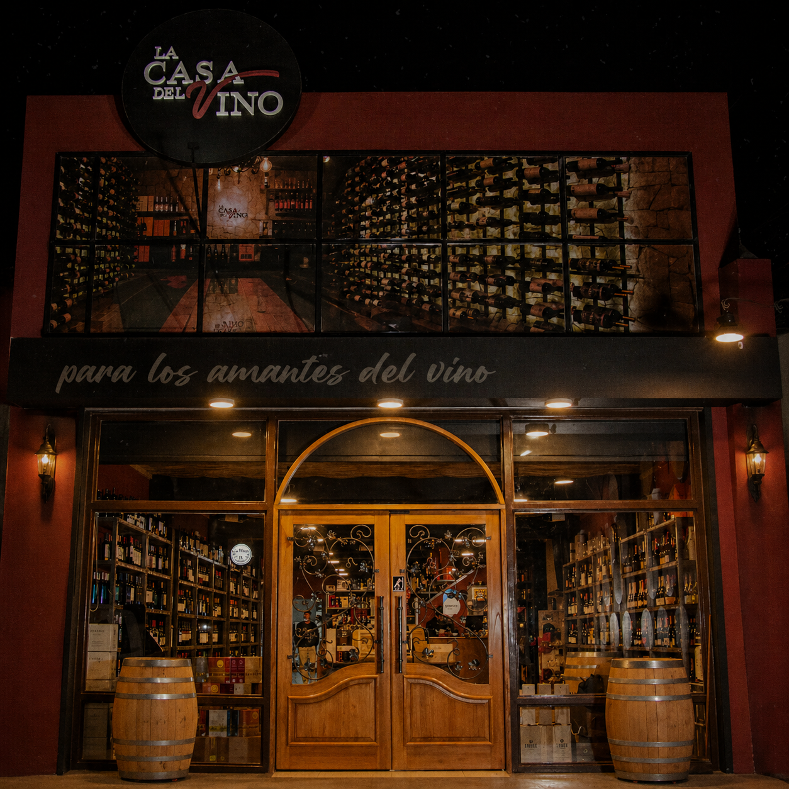
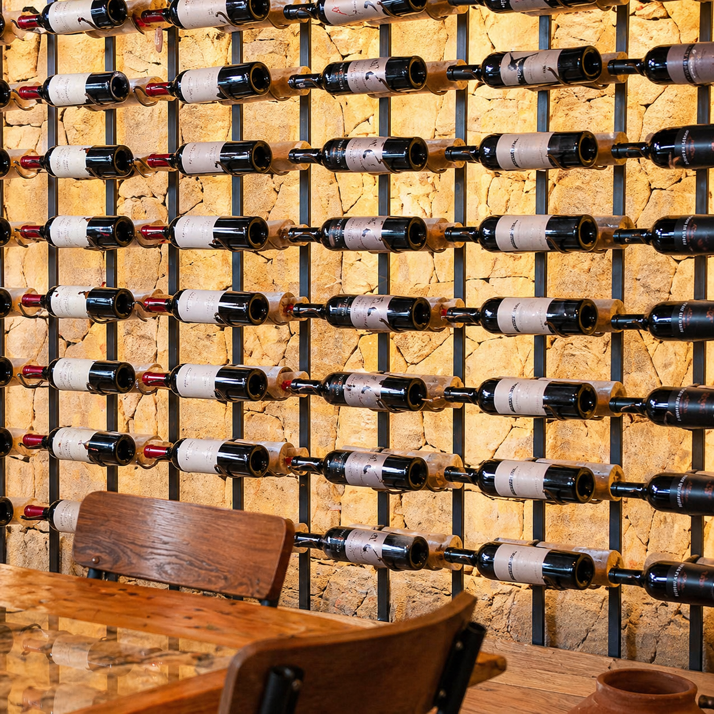
Nuestros Vinos.
En La Casa del Vino San Juan ofrecemos una cuidada selección de vinos tintos, blancos y espumantes de distintas bodegas. Cada botella es elegida por su calidad y carácter, para que nuestros clientes encuentren siempre el vino ideal para cada ocasión.
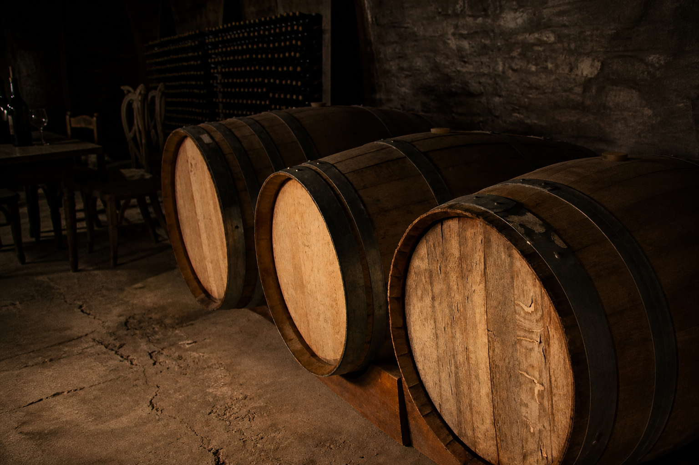
"Cada botella cuenta una historia.
La tuya empieza acá."
— La Casa del Vino, San Juan
Una selección
para cada ocasión.
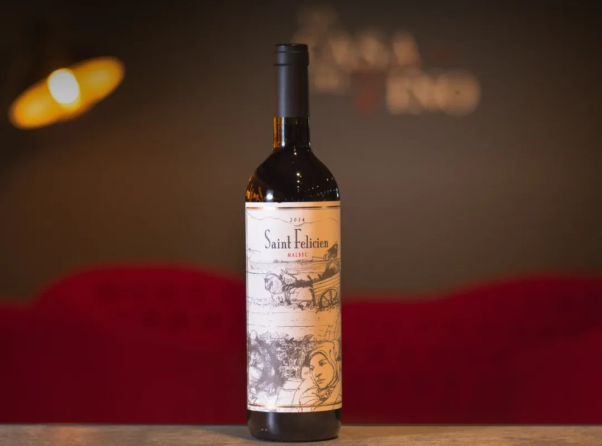
Vino Tinto
Saint Felicien
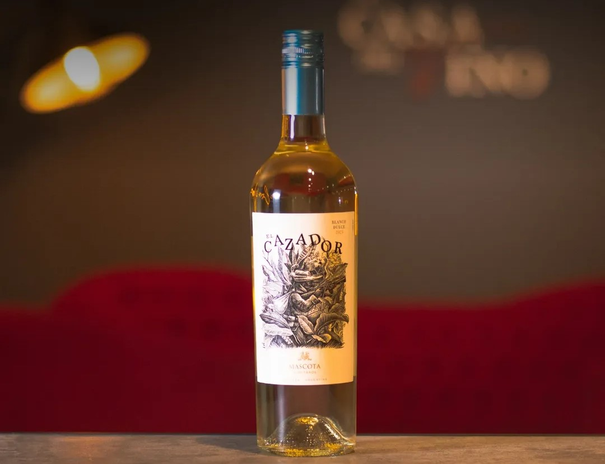
Vino Blanco
El Cazador
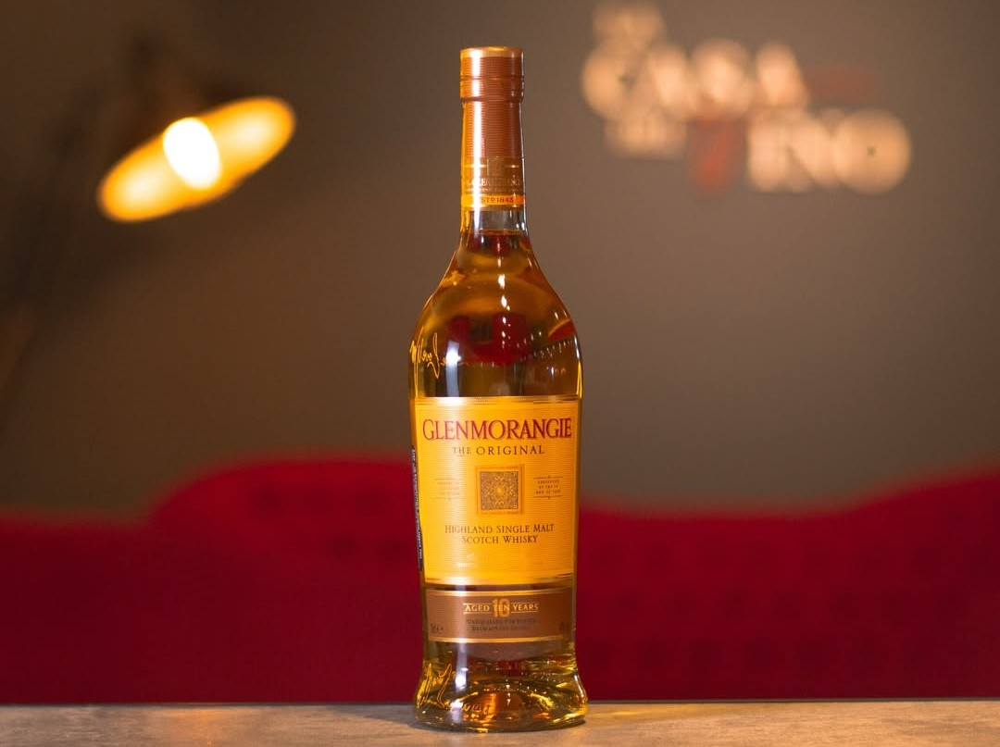
Whisky
Glenmorangie
Cognac
Reserva San Juan
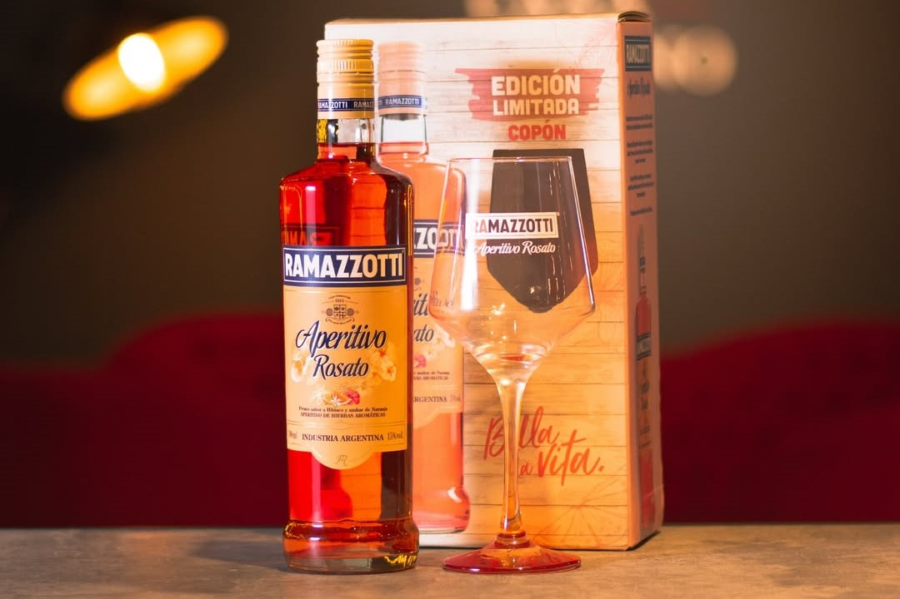
Licor
Ramazzotti
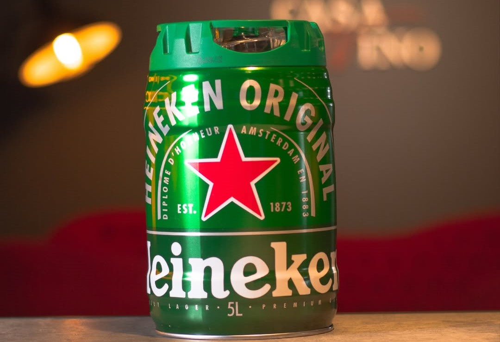
Cervezas
Heineken
Promos destacadas.
Precios y disponibilidad pueden variar. Consultanos para actualizaciones.
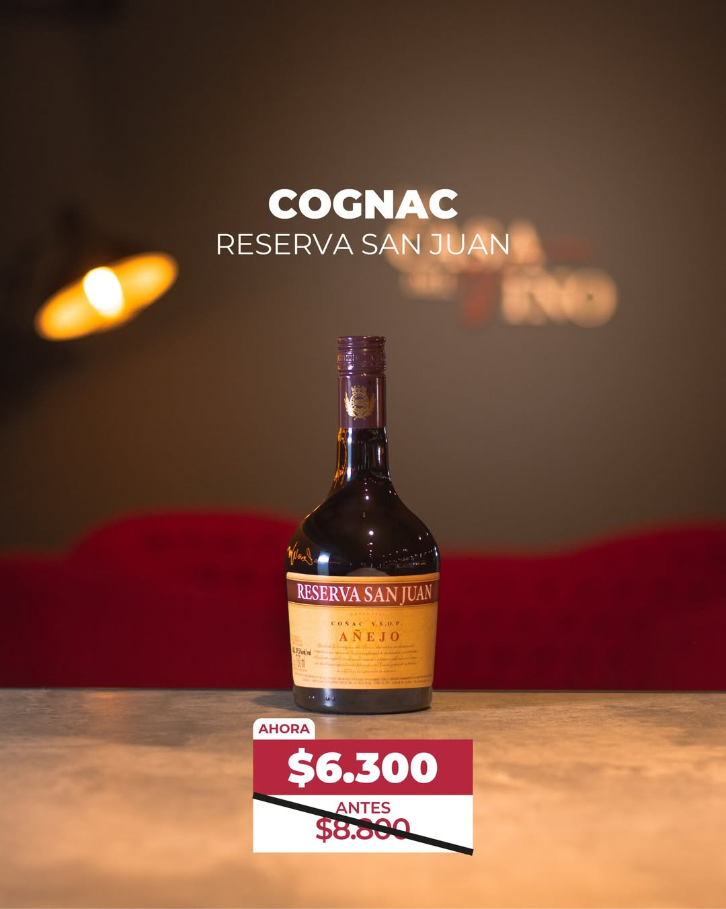
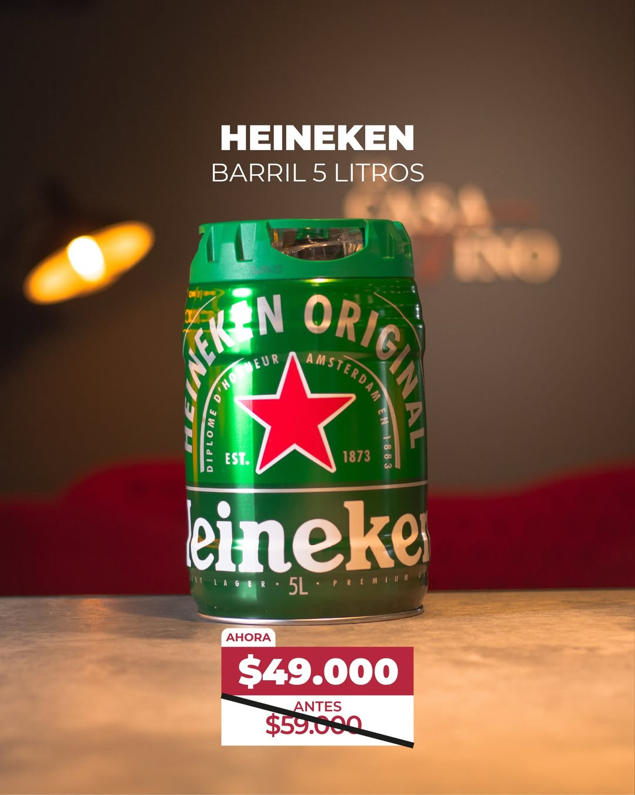
Servicio de Degustación.
Guiada por expertos
Nuestros especialistas te llevan por una selección de vinos curada, explicando cada etiqueta, bodega y varietal.
Maridaje incluido
Cada degustación viene acompañada de una tabla de quesos y fiambres seleccionados para realzar los aromas y sabores.
Grupos & Privadas
Desde una salida en pareja hasta un evento corporativo. Personalizamos la experiencia según el grupo y la ocasión.
En nuestra vinoteca
El ambiente de la vinoteca suma: temperatura ideal, iluminación pensada y la tranquilidad para disfrutar sin apuros.
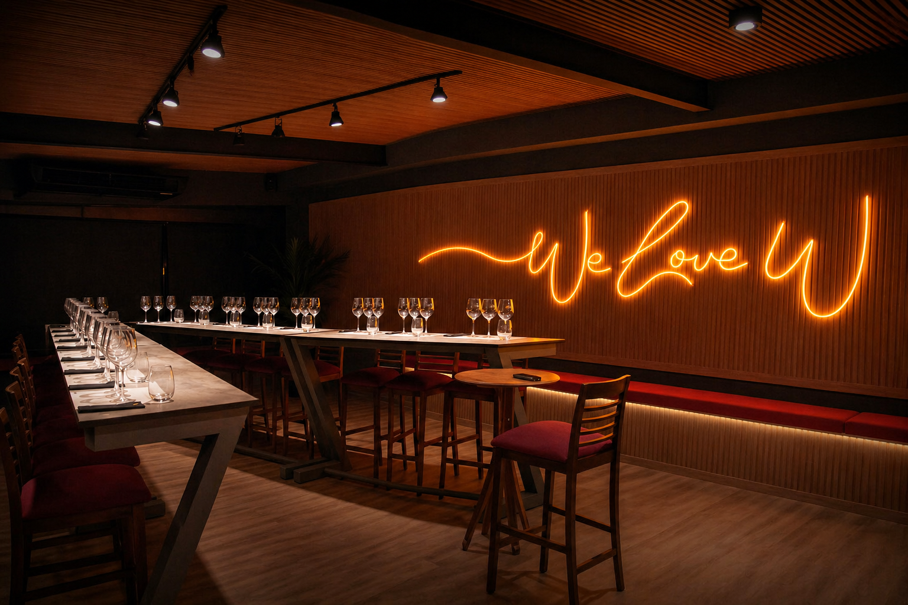
Encontranos
Vení a la vinoteca.
Florentino Ameghino Norte 146
Capital, San Juan, Argentina
Horarios de atención
Lunes
10:00 – 13:30 · 18:00 – 22:30
Martes
10:00 – 13:30 · 18:00 – 22:30
Miércoles
10:00 – 14:00 · 18:00 – 22:30
Jueves
10:30 – 14:00
Viernes
18:00 – 22:30
Sábado
10:00 – 13:30 · 18:00 – 22:30
Domingo
10:00 – 13:30 · 18:00 – 22:30
¿No sabés qué elegir?
Contanos la ocasión y te ayudamos a encontrar el vino o la bebida perfecta. Eso es lo que nos gusta hacer.